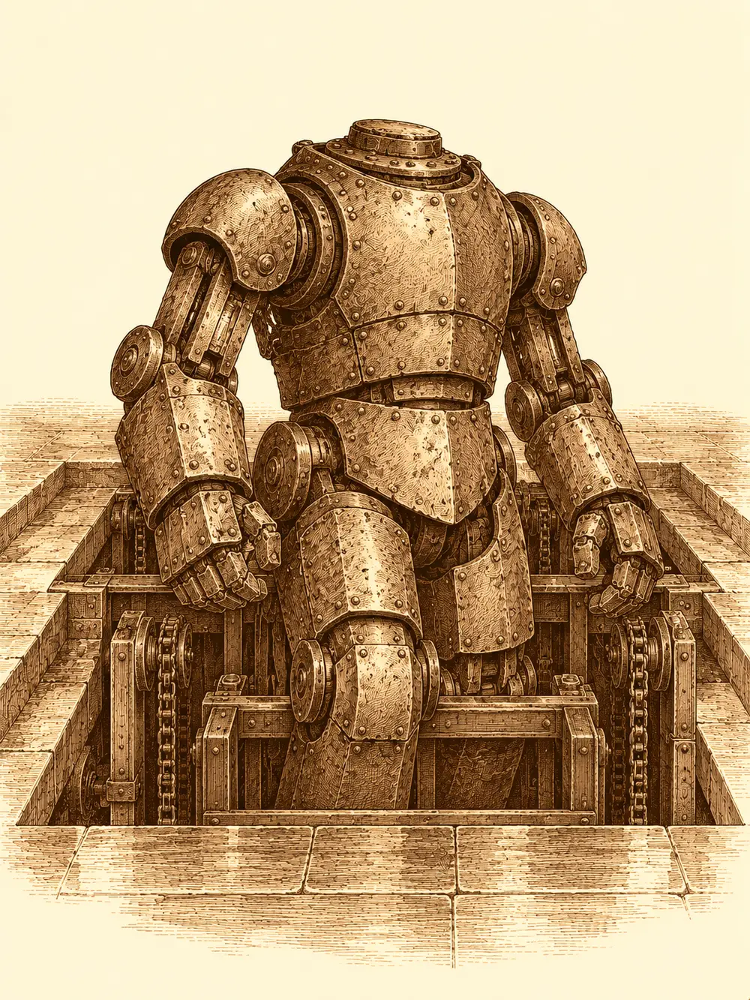

Capítulo 75
El balneario
Libro V · Los guardianes del Norte y del Sur
La base de Ukio seguía oliendo a quemado. Había menos criaturas que antes, y las que quedaban se movían con cuidado por las salas, como si todavía no se fiaran de sus propias garras. Katari recorrió la casa preguntando a unos y a otros qué había ocurrido en el segundo asalto, y cada respuesta la dejaba un poco más seria.
Shigeru, en cambio, tenía la cabeza llena de planes. Si la base podía atacarse dos veces, podía atacarse tres, y había estado pensando. En Ukio no había ningún dojo. Él levantaría uno: un lugar donde entrenar, donde los cazadores pudieran practicar, donde él mismo pudiera sacar la rabia a golpes sin romperle la cara a nadie. Quizá hasta una sala especial para que Blaze quemara lo que quisiera sin poner en peligro el edificio. Y, ya puestos, un dojo era una buena tapadera para esconder debajo otra base que nadie conociera. De momento no había ni una piedra puesta, pero el monje hablaba de él como si ya oliera a madera nueva.
Danifae apareció a media mañana, como hacía de vez en cuando, para ver a Shizuka. A quien le preguntó dónde había estado le contestó con una sonrisa que había guardado sus tres esferas lejos de todos, en un lugar seguro, y no añadió una palabra más por mucho que insistieron.
El que sí hablaba era un recién llegado. Era el conductor humano de la caravana que los cazadores habían encontrado destrozada en el camino del sur. Había ido a dar cuenta al shogun de lo ocurrido, a entregar los restos que se habían podido salvar, y luego había seguido el rastro de aquellos cazadores porque le parecía que tenían un modo de vida curioso. Él también cazaba, aseguró, aunque patos y piezas menores. Se plantó delante de la mesa y preguntó qué había que hacer para apuntarse.
Danifae, con los pies sobre la mesa, señaló a Guxi sin mirar.
El artífice sacó una caja llena de papeles y le tendió uno. El conductor lo leyó despacio, de arriba abajo.
"¿Y cuánto se cobra por esto?".
"Por ahora hay dos personas con nómina", contestó Guxi, "porque nadie quiere firmar el contrato. No entiendo por qué".
"Será porque no hay nómina", dijo alguien al fondo.
Guxi explicó, con la paciencia de quien lo ha explicado demasiadas veces, que los cazadores ayudaban cuando alguien pedía ayuda o cuando había un interés común, y que si no había trabajo no había paga. El conductor no firmaba nada sin saber cuál era la tarea y cuánto le iban a dar por ella. Guxi suspiró, se ajustó la placa de oficial del shogunato que llevaba en el pecho y cambió de tema. Hacía poco, contó, algunos cazadores se habían metido en una casa de inversiones de Sho y se habían llevado varias cajas fuertes. Estaba preparando la defensa de uno de ellos, porque por desgracia el asunto iba a acabar en juicio.
Katari no levantó la vista de la mesa.
"Conozco a alguien que puede tener información", siguió Guxi, "y la llave para abrir esas cajas".
Sacó cinco papeles y los dejó sobre la mesa. Eran entradas para un balneario de lujo en la montaña. El hombre al que buscaban era alto, bastante pálido, y siempre iba acompañado de sus dos hijas y un hijo. Era uno de los grandes de aquella casa, de los pocos que tenían llave del lugar, y Guxi estaba convencido de que allí había trapos sucios que sacar a la luz. Lo que necesitaba eran sus documentos y su llave.
"¿Y cuánto cobramos cuando se abran las cajas?", preguntó Danifae.
"Cuando termine el juicio, ya veremos".
Katari habló entonces, con voz firme. Si dentro de las cajas había dinero, ese dinero era de la gente a la que habían estafado, y antes de repartir nada había que devolvérselo. Guxi asintió. El conductor miró a unos y a otros como quien empieza a sospechar dónde se ha metido.
Blaze fue con ellos, porque Blaze iba a donde fuera Shigeru. Alguien comentó que llevar a una muchacha que escupía fuego a unas aguas termales era como echar leña al fuego, y la muchacha se rio más fuerte que nadie.
Tardaron casi medio día en llegar. El balneario era enorme, encajado en la ladera entre nubes de vapor, y la puerta se abría a un vestíbulo silencioso donde unos pequeños constructos de metal iban y venían sin parar, sobre ruedas o sobre patas articuladas. Uno de ellos se les acercó con un zumbido.
"Bienvenidos, señores, señoras. ¿Me permiten ver su invitación?".
El conductor se quedó mirándolo con la boca entreabierta. En su vida había visto un trasto de metal que hablara. El constructo leyó las entradas y les explicó el camino: hombres a la izquierda, mujeres a la derecha, baño mixto en el centro, y los vestuarios a un lado. Las entradas eran tarjetas; al acercarlas a los armarios, las puertas se abrían solas. Allí dejaron armas y armaduras. Solo había una toalla por persona.
Danifae consiguió esconder una daga en los pliegues de la suya sin que nadie lo viera, o eso creyó. El conductor hizo lo mismo con un cuchillo pequeño, aunque le costó bastante más disimularlo.
El sitio estaba vacío. No se oía una voz. Los pasillos de piedra pulida devolvían el eco de los pies descalzos, y el vapor que salía de las piscinas olía a azufre y a hierbas. Shigeru, que nunca había estado en un lugar así, echó a correr y se tiró de cabeza al agua. Mientras volaba vio un cartel que prohibía saltar. El agua cubría bastante menos de lo que parecía, y se salvó de abrirse la cabeza por un palmo.
"Pensaba que esto era más profundo", dijo al salir, chorreando.
Al fondo de la piscina de los hombres había un muchacho de unos dieciséis años, relajado, con los ojos cerrados. Shigeru acabó a su lado y le dio conversación. El chico se quejó del ruido: su padre había reservado aquel lugar, no esperaban a nadie más. Los cazadores replicaron que a ellos los habían dejado entrar sin problema. Sobre una puerta cerrada había un letrero que Shigeru leyó en voz alta, deletreando, sin entender qué demonios quería decir aquello de clientes muy importantes. Probaron sus tarjetas en ella. No se abrió.
En el baño de las mujeres, Danifae y Katari encontraron a dos muchachas. Una tendría unos dieciséis años; la otra, mucho más pequeña, abrazaba un oso de peluche. Blaze apareció como un incendio, intentó tirar a Katari al agua de un empujón, falló, y antes de que nadie pudiera regañarla ya estaba sentada al lado de la pequeña, hablando sin parar. La niña se llamaba Penny. Era tímida como un ratón, y en cinco minutos Blaze la había hecho reír.
Danifae se acercó a la mayor con su sonrisa más dulce y le contó que ellas también eran hermanas, adoptadas, y que habían venido a relajarse. La muchacha respondió que su padre era un hombre de negocios, que había venido a ocuparse de unas finanzas y que ellas, en realidad, eran sus guardaespaldas. La drow dejó que su voz se volviera más suave, más envolvente, buscando meterse dentro de la cabeza de la otra.
No funcionó. Y mientras hablaban, con la mano que tenía apoyada en el borde, la chica dejó salir unas garras que se hundieron en la piedra y arrancaron un pedazo. Los escombros cayeron al agua con un chapoteo. Un instante después, la mano volvía a ser una mano.

"¿Estás bien?", preguntó Danifae.
"Hace mucho que no me hago las uñas".
"¿Te pasa a menudo?".
"Es algo de familia".
No mentía. Katari, que lo había visto todo desde el otro lado de la piscina, sintió la voz de Danifae dentro de su cabeza, a través del vínculo que las unía. Ninguna de las dos supo decir qué era aquella muchacha. Había demasiadas criaturas en Kuroto capaces de algo así.
Blaze volvió a los pocos minutos con la noticia: su nueva amiga le había dicho que su padre estaba en la zona de los ricos.
Danifae entró en el baño de los hombres sin toalla y sin el menor pudor. Alguien se tapó los ojos. El conductor no sabía dónde mirar. La drow sacó la daga, se arrodilló ante la puerta cerrada y la forzó en un momento.
Fue el conductor quien entró primero. Al fondo de una bañera llena de burbujas había un hombre alto y pálido, tumbado, con unas gafas que se quitó al verlos llegar.
"Pensaba que estaba solo".
El conductor intentó primero hablarle en la jerga de los ladrones, a ver si la reconocía. No la reconoció. Probó entonces a decir que necesitaban a alguien muy hábil para abrir ciertas cajas, y dejó la frase a medias.
"Sabía que este día llegaría", dijo el hombre. "Vosotros sois los que robasteis en la casa de inversiones".
Katari, convertida en una araña diminuta, había subido al hombro de Danifae y escuchaba desde allí. El financiero admitió que había sido uno de los grandes contribuyentes de aquella casa, hasta que los negocios se volvieron más turbios de lo normal y también a él le quitaron su dinero. Danifae se acercó tanto que casi le rozaba la cara. El hombre se levantó; era más alto que ella.
"No lo intentes, muchacha. Soy un hombre de negocios respetable y no me interesan los placeres de la carne".
Les ofreció dos tratos. El primero era peligroso: probar en combate un producto de su empresa. El segundo, sencillo: llevarle a Guxi una carta cerrada, que no podrían abrir.
"Acepto la carta", dijo Danifae enseguida.
El hombre la miró un momento largo. Sabía que ella no tenía intención de respetar la condición.
"Entonces será la otra opción. Por supuesto, os dejaré recoger vuestras armas y armaduras. No sería un combate justo".
Shigeru se volvió hacia la drow, incrédulo. Ella se encogió de hombros.
Se vistieron a toda prisa en los vestuarios. Danifae ayudó a Katari a anudarse la ropa con más entusiasmo del necesario, y la druida acabó volviendo a convertirse en araña por si hacía falta sorprender a alguien. Luego salieron al vestíbulo.
El suelo se abrió delante de ellos con un chasquido mecánico. Algo subía desde abajo, como en un montacargas. Era una máquina más grande que un hombre, de metal remachado y articulaciones gruesas, y cuando terminó de subir habló con una voz sin aliento.
"Objetivos adquiridos. Iniciar eliminación".
Shigeru fue el primero. La golpeó con la cadena y después con los puños, y la máquina encajó los golpes sin inmutarse, como un yunque que recibe martillazos. Danifae levantó la mano y una calavera brumosa apareció sobre el autómata, una maldición que lo volvería torpe; luego le clavó la daga buscando cegarlo. El conductor disparó con su arco desde atrás, y la primera flecha se perdió.
La máquina soltó un gas espeso que les llenó la boca de un sabor metálico, y sus movimientos se volvieron lentos, pesados, como si caminaran por el fondo de un estanque. Katari abandonó la forma de araña, recuperó su cuerpo y llamó al espíritu de un unicornio, que apareció a su lado envuelto en luz y empezó a sanar a quienes tocaba. Shigeru, que debía a Genbu un aliento venenoso, se lo escupió a la cara al autómata. No le hizo nada; las máquinas no respiran. El monje soltó un eructo y pidió perdón por no haberse lavado los dientes.
El combate fue largo. Cada golpe arrancaba tuercas y chispas, pero el prototipo seguía en pie. De pronto se le encendieron unas luces rojas por todo el cuerpo.
"Alerta roja. Alerta roja".
Su siguiente golpe aplastó a Shigeru contra el suelo. El monje se quedó inmóvil, con el pecho apenas subiendo y bajando. Katari no esperó: corrió hacia él y la magia le cerró las heridas antes de que la vida se le escapara del todo. Shigeru abrió los ojos con un jadeo.
Después la druida se volvió hacia la máquina y le lanzó una ráfaga de frío. El metal crujió, se cubrió de escarcha y empezó a desmontarse en una lluvia de chapas, tornillos y engranajes. En algún rincón de aquel cuerpo había una explosión esperando, y el hielo la apagó antes de que llegara.
Donde debería haber estado el corazón de la máquina había una caja negra. Danifae la cogió enseguida, pero había demasiados ojos mirando para que pudiera desaparecer con ella. Dentro había un fajo grueso de papeles y una llave extraña, plana, parecida a una tarjeta.
"¿No dijo Guxi que buscábamos una llave y unos papeles?".
Los papeles eran cuentas. Danifae no era experta en números, pero hasta ella vio que algunas cifras no cuadraban: alguien había estado falsificando lo que se pagaba a quienes contribuían. El conductor las estudió más despacio y frunció el ceño. Había nombres que le sonaban a los apodos que usaba la gente de cierto mundillo que él conocía bien.
"Estos se dedicaban a la droga", dijo.
Los demás se inclinaron sobre los papeles. No había allí ni sustancias ni cantidades que lo dijeran con claridad, solo aquellos nombres raros entre apuntes corrientes. Era lo que le parecía a él, que había visto mucho; no lo que ponía el papel.
Katari pidió quedarse con la llave y los documentos. Danifae le puso mala cara, como quien ve escaparse un plan, y al final se los entregó con un suspiro teatral. La druida tenía que llevárselo todo a Guxi.
Estaban a punto de marcharse cuando alguien preguntó dónde estaba Blaze. La encontraron todavía con Penny, hablando y riéndose como si se conocieran de toda la vida.
"Hasta luego, Penny", gritó al marcharse. "¡Nos vemos!".
Llegaron a Ukio de noche. Guxi recibió la llave y los papeles con cara de alivio, aunque se le torció un poco al ver lo maltrecho que venía Shigeru. Se marcharía unos días a Sho, anunció, a preparar el caso. Antes de pensar en lo que hubiera dentro de las cajas, pretendía que nadie acabara en la cárcel.
Katari sacó entonces su bolsa y ofreció repartir unas monedas entre quienes la habían acompañado. Nadie las cogió. No querían el dinero de una compañera; querían lo que les correspondiera del shogunato, cuando les correspondiera algo. Shigeru lo dijo en voz alta y, como si alguien lo hubiera estado escuchando, Guxi le tendió una pequeña bolsa de cuero.
"Por fin ha llegado vuestro primer pago. Para los que tenéis contrato".
El monje la abrió. Cincuenta monedas. Se quedó mirándolas un rato, sopesándolas en la palma, mientras el conductor, que no había firmado nada, lo observaba de reojo y empezaba a hacer cuentas. Las cajas seguían cerradas en algún lugar, y los vecinos estafados todavía no habían visto ni una moneda de lo suyo.